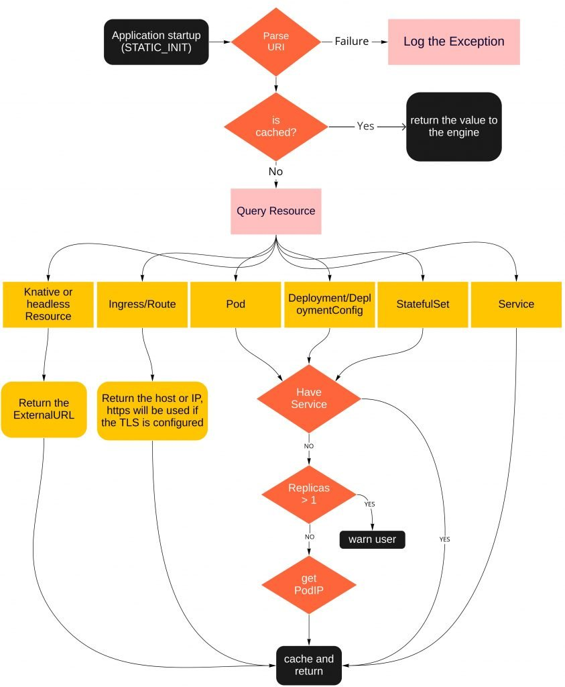
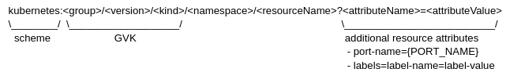

Kogito Service Discovery for Workflows
I have recently been wondering: how many times do we find ourselves accessing a specific resource inside a Kubernetes cluster searching for information about how to access it or to expose our awesome service so others can consume it. Right? So, this enhanced service discovery might help you get rid of it by setting a specific static URI that holds all information that the service discovery engine needs to know to translate it to the right service backed by the corresponding Deployment, StatefulSet, Pod, etc.
The service discovery engine, part of the Kogito project, is a Quakus add-on part of Kogito Serverless Workflow engine and for now it can be added to other Quarkus Applications, however it will bring the Kogito Serveriess Workflows dependencies. It is in our roadmap to make the Discovery engine a standalone add-on, allowing it to be added to any Quarkus application. It is expected that you are working with the Kogito Serverless and already have the kogito-quarkus-serverless-workflow extension in the application’s dependencies. For more information about Kogito Serverless Workflow guides.
What’s the problem?
OK, but what problem are we trying to solve here? Well, Kubernetes resources are dynamic and its configuration values can change from time to time, which can require some manual steps later to get the updated configuration, let’s say, by a cluster upgrade or a domain name change that can lead an ingress route being updated or a Knative endpoint being changed as well. The service discovery can help you with that by abstracting these changes from the user keeping the Application that consumes these services up to date.
Instead of rebuilding the whole application so that the Quarkus properties can take effect, just restarting the application is enough. If the application is a Knative Service, then it can be automatically done by Knative if the service doesn’t receive requests for a while since it is scaled to 0 replicas.
But, what’s the difference between the current service discovery that we already have out there?
There are a few service discovery engines available. Stork, for example, which is a great option to discover services in a cluster (At the time of publication of this article, we are investigating the new Stork’s new feature that allows custom discovery). However, the Kogito team wanted to move one step forward and, instead of being able to look up only for services, why not be able to search for almost any kind of Kubernetes resources that helps expose the pod? That is where the Kogito Service discovery engine kicks in, with it you can easily discover the most common Kubernetes resources that expose your service or application. Take a look on the picture below that quickly demonstrates how exactly it works:

In a nutshell, the engine scans the Quarkus configuration searching for any value that matches the URI that the engine expects. Once found, it queries the Kubernetes API searching for the given resource. Take a look in the diagram below:

For the scheme, we have three options to help to better identify where the resource is running on:
- kubernetes
- openshift
- knative
About the Kubernetes resources, identified by the Group,Version and Kind (GVK), there is a list with a few of the most common objects that can be used for discovering:
- v1/service
- serving.knative.dev/v1/service
- v1/pod
- apps/v1/deployment
- apps.openshift.io/v1/deploymentconfig
- apps/v1/statefulset
- route.openshift.io/v1/route
- networking.k8s.io/v1/ingress
Keep in mind that the GVK information is mandatory, however the namespace/project is optional and, if empty, the one where the application is running will be used. The resource to be queried is always the last item in the URI.
Helping the Service Discovery engine be more precise
The engine allows users to set query strings that helps the discovery process to select the correct resource. The available parameters are:
- Custom Labels: Can be used to filter services in cases where two different services that have the same Label Selector but expose different ports. In such cases, the custom label will be used to filter the right service. The custom label accepts multiple values separated by a semicolon. In the following example, we have two labels, app-port and app-revision:
kubernetes:v1/service/test/my-service?labels=app-port=default;app-revision=10
- Port Name: A container can expose more than one port, in which case the engine might not return the expected port. The order of precedence of the engine is/looks like this: user defined port name -> https -> port named as http or web -> first port in the list. The port-name can be defined to help the engine use the correct port for such cases where the precedence shown above is not able to select the correct port. The port name can be defined as:
kubernetes:v1/pod/test/my-pod?port-name=my-port
Debugging the communication between client and the K8s API
By default, the okhttp interceptor logging is disabled to avoid polluting the logs with information that might be not needed. However it can be enabled just by setting the following Quarkus property:
quarkus.log.category."okhttp3.OkHttpClient".level=INFO
Action Time!
Let’s see the service discovery engine into action. For this example we have a very simple application that will consume a serverless application running on Minikube with Knative capability enabled. In this link you can find information about how to install Minukube and here how to enable the Knative addon.
With Minikube running with Knative configured, let’s deploy the serverless-workflow-greeting-quarkus, for that, execute the following commands:
# Create a new namespace and set it as the default
$ kubectl create namespace greeting-quarkus
$ kubectl config set-context --current --namespace=greeting-quarkusNote that there is a tool called kubectx that helps to select the default namespace.
To be able to directly build the container application using the in-cluster Docker Daemon from Minikube, execute the following command:
$ eval $(minikube -p minikube docker-env --profile knative)If you haven’t cloned the Kogito Examples repository yet, the next command can help you with this:
$ git clone https://github.com/kiegroup/kogito-examples.git Access the serverless-workflow-greeting-quarkus:
$ cd kogito-examples/serverless-workflow-examples/serverless-workflow-greeting-quarkusIn order to instruct Quarkus to generated and deploy the needed resources automatically, the following extensions needs to be added to the example’s dependencies:
<dependency>
<groupId>org.kie.kogito</groupId>
<artifactId>kogito-addons-quarkus-knative-eventing</artifactId>
</dependency>
<dependency>
<groupId>io.quarkus</groupId>
<artifactId>quarkus-kubernetes</artifactId>
</dependency>
<dependency>
<groupId>io.quarkus</groupId>
<artifactId>quarkus-container-image-jib</artifactId>
</dependency>After the dependencies were added, build the application with the following command:
$ mvn clean package \
-Dquarkus.kubernetes.deployment-target=knative \
-Dquarkus.knative.name=greeting-quarkus-service \
-Dquarkus.container-image.build=true \
-Dquarkus.container-image.registry=dev.local \
-Dquarkus.container-image.group=example \
-Dquarkus.container-image.name=greeting-quarkus-service \
-Dquarkus.container-image.tag=1.0 \
-Dquarkus.kubernetes.deploy=true \
-Dquarkus.container-image.push=falseThis command will build the application, create a container with the application and deploy in the Minikube using the namespace set before.
List the available Knative services:
$ kubectl get services.serving.knative.dev greeting-quarkus-service
Full result redacted. It should return a URL similar to:
http://greeting-quarkus-service.greeting-quarkus.10.104.186.138.sslip.io greeting-quarkus-service-00001Ok, we can now try to consume the Serverless function:
$ curl -X POST -H 'Content-Type:application/json' -H 'Accept:application/json' -d '{"workflowdata" : {"name": "John", "language": "English"}}' http://greeting-quarkus-service.greeting-quarkus.10.104.186.138.sslip.io/jsongreet
{"id":"5294a215-e5f4-45ab-b6e1-d3360575b852","workflowdata":{"name":"John","language":"English","greeting":"Hello from JSON Workflow, "}}% Let’s proceed by creating a small application that will consume this Knative Service starting by creating a new application using Quarkus CLI:
$ quarkus create app org.kie.kogito:greeting-quarkus-consumer:1.0 --extension=resteasy --extension=org.kie.kogito:kogito-quarkus-serverless-workflow:2.0.0-SNAPSHOT
$ cd greeting-quarkus-consumerImport the project in your favorite IDE then, to make things easier, start the Quarkus application we just created in dev mode:
$ quarkus devTIP: Quarkus Dev service is enabled by default, for this tutorial it is not needed and can be disable with the following Quarkus property: quarkus.devservices.enabled=false
Let’s prepare our application by adding a few dependencies that will be used to consume the Greeting Quarkus Knative service.
First, replace the GreetingResource.java class with the following content: https://gist.github.com/spolti/bac0f153ad53bd0e96985f5b17e7c93b
Second, build the URI that will be used to query the Knative Service.
For the protocol we can use knative and the GVK will be serving.knative.dev/v1/service, the namespace previously created greeting-quarkus and the resource name which is greeting-quarkus-service, that will result in the following URI:
knative:serving.knative.dev/v1/service/greeting-quarkus/greeting-quarkus-serviceNow add the following system property to the application.properties:
my.knative.service=knative:serving.knative.dev/v1/service/greeting-quarkus/greeting-quarkus-service
With the dev mode in execution, just call the /hello endpoint:
$ curl http://localhost:8080/hello
{“id”:”8d2fcb94-d695-4ebc-8919-66c25bba6765″,”workflowdata”:{“name”:”John”,”language”:”Spanish”,”greeting”:”Saludos desde JSON Workflow, “}}
And in the logs you should see something like:
Calling url -- http://greeting-quarkus-service.greeting-quarkus.10.104.186.138.sslip.io/jsongreet with payload -> {"workflowdata" : {"name": "John", "language": "Spanish"}}Enable the DEBUG log level to take a closer look at what happened. Add the following system property to the application.properties:
quarkus.log.category.”org.kie.kogito.addons.quarkus.k8s”.level=DEBUG
And call the /hello endpoint again, you will see some messages like:
And call the /hello endpoint again, you will see some messages like:
2022-09-14 16:26:23,422 DEBUG [org.kie.kog.add.qua.k8s.par.KubeURI] (Quarkus Main Thread) KubeURI successfully parsed: KubeURI{protocol='knative', gvk=GVK{group='serving.knative.dev', version='v1', kind='service'}, namespace='greeting-quarkus', resourceName='greeting-quarkus-service', rawUrl='knative:serving.knative.dev/v1/service/greeting-quarkus/greeting-quarkus-service', customPortName='null', customLabels=null}
2022-09-14 16:26:23,518 INFO [org.kie.kog.add.qua.k8s.KubeResourceDiscovery] (Quarkus Main Thread) Connected to kubernetes cluster v1.23.4, current namespace is greeting-quarkus. Resource name for discovery is greeting-quarkus-service
2022-09-14 16:26:23,521 DEBUG [org.kie.kog.add.qua.k8s.KnativeResourceDiscovery] (Quarkus Main Thread) Trying to adapt kubernetes client to knative
2022-09-14 16:26:23,531 DEBUG [org.kie.kog.add.qua.k8s.KnativeResourceDiscovery] (Quarkus Main Thread) Found Knative endpoint at http://greeting-quarkus-service.greeting-quarkus.10.104.186.138.sslip.ioAs you can see, the URI we have defined was translated by the real endpoint which is bound to the service we want to access.
Drawbacks
As the service discovery feature reads the Quarkus configuration during startup in search of the URI pattern we’ve discussed previously, it can bring a very small delay during the startup, so before moving your application to production you need to decide if you can afford having your application startup delayed by a few milliseconds or seconds.
Service Discovery Enabled
(main) sw-service-discovery 1.0.0-SNAPSHOT on JVM (powered by Quarkus 2.12.2.Final) started in 2.360s. Listening on: http://0.0.0.0:8080
Service Discovery Disabled
(main) sw-service-discovery 1.0.0-SNAPSHOT on JVM (powered by Quarkus 2.12.2.Final) started in 1.507s. Listening on: http://0.0.0.0:8080As we can see, the difference is not that big, but it can vary depending on a few things like network latency between the application and the Kubernetes cluster and how many configurations are used.Keep in mind that when using the kogito-quarkus-serverless-workflow extension this feature can be disabled by excluding the kogito-addons-quarkus-kubernetes, as shown below:
<dependency>
<groupId>org.kie.kogito</groupId>
<artifactId>kogito-quarkus-serverless-workflow</artifactId>
<exclusions>
<exclusion>
<groupId>org.kie.kogito</groupId>
<artifactId>kogito-addons-quarkus-kubernetes</artifactId>
</exclusion>
<exclusion>
<groupId>org.kie.kogito</groupId>
<artifactId>kogito-addons-quarkus-kubernetes-deployment</artifactId>
</exclusion>
</exclusions>
</dependency>Conclusion
The service discovery feature has proven to be very useful since it can discover the most common Kubernetes resources that help expose the application internally in the cluster or to the world. Another advantage of using the service discovery is that, depending if the service has been migrated to another cluster or region that can lead the domain to be changed, the end user does not have to worry about it. The engine will take care of the service endpoint configuration when such migrations or any other updates that can lead to a change to the service happens.
Author
Filippe is Senior Software Engineer at Red Hat working with Business Automation products in Cloud area. On the same company worked as Technical Support Engineer by providing specialized support for customers and supporting developers with JBoss products on Latin America. Before worked at Vale Card as Infrastructure engineer and at Algar Telecom as Analyst responsible for the Middleware layer. Open Source and Cloud Computing enthusiast and speaker. Graduate in Systems Information, graduate studies in Information Security. Over the past years he has also contributed with several open source projects.
View all posts